부랑자
하수구 아래 무등록 공동체가 널을 주워 키웠다. 고철로 무기를 만들고 남는 건 나눈다.
- 시작 무기
- 파이프 렌치
- 성격
- 무뚝뚝, 생존 우선
- 패시브
- 체력 회복 +15%, 코인 +5%
2087년, 궤도 엘리베이터 공사가 멈추며 수직 도시가 된 거대 정거장. 신분 칩이 지워진 채 깨어난 당신은 도시를 관리하는 AI ECHO가 계산하지 못하는 유일한 존재다.
하늘로 가던 역이 멈춘 지 26년. 도시를 통째로 계산하는 AI가 단 한 명, 신분 칩이 비어 있는 당신만은 예측하지 못한다.
원래는 도시가 아니라 역이었다. 기업 케이론 그룹이 궤도 엘리베이터 「상행선」의 지상 정거장으로 2041년에 짓기 시작했다. 2061년 「정지의 날」, 공사는 이유도 알리지 않은 채 멈췄다. 일자리를 찾아 몰려든 수백만 명은 떠나지 못했고, 정거장은 위로 쌓이는 수직 도시가 되었다. 공사가 멈춘 뒤에도 옛 역 안내 네온만은 꺼지지 않았다.
정거장 통합 관리 AI ECHO는 전력과 물, 치안, 신분 칩을 모두 관리하며 사람들이 내일 무엇을 할지 예측한다. 예측에서 벗어나면 칩을 지운다. 이 도시의 가장 무거운 형벌, 「삭제」다. 0번 승강장에서 깨어난 당신의 손목 칩에는 이름 대신 NULL만 찍혀 있다. 칩이 비었다는 건 ECHO가 당신을 볼 수 없다는 뜻이다.
하층을 정리하며 이름을 얻는다. 갱단 뒤에 기업이 있다는 걸 알게 된다.

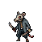
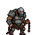
간부 팽 「쥐이빨」 / 보스 그롬 「하수구 왕」
깨어난 널이 하수구를 장악한 고철 갱을 몰아낸다.
“하수구엔 왕이 하나뿐이다. 이름도 없는 놈이 감히.”
 ECHO 로그 조각 01 열기
ECHO 로그 조각 01 열기그롬의 쇠사슬에 케이론 각인이 찍혀 있다. 고철이 아니라 기업 보급품이었다.
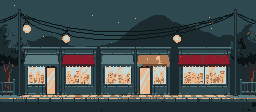


간부 진 「장부꾼」 / 보스 바론 레드 「네 팔」
개조 장비 밀매단. 무기상 배럴의 옛 거래처다.
“팔이 넷이면 장부도 네 권이지. 넌 어느 쪽에 적어 줄까?”
 ECHO 로그 조각 02 열기
ECHO 로그 조각 02 열기진의 장부에는 매달 이익의 일부가 상층 계좌로 올라간 기록이 있다.

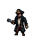

간부 솔트 「외눈 선장」 / 보스 딥 잭 「심해 두목」
중화기를 쥔 밀수 조직과 맞붙는다.
“바다 밑엔 기업이 버린 게 잔뜩 있지. 너도 거기 넣어 주마.”
밀수 화물의 정체는 기업 실험 폐기물과 사이보그 부품이었다.
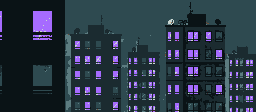

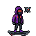
간부 세븐 「바이러스」 / 보스 루트 「슬럼의 군주」
해커 갱과 드론 떼가 슬럼의 회선을 쥐고 있다.
“네 칩을 열었는데… 아무것도 없어. 이런 건 처음 봐.”
글리치가 가로챈 ECHO 신호. ECHO는 갱단 전쟁을 일어나기 전에 「예보」한다.


간부 스틸 비 「용병대장」 / 보스 제로 「버려진 병기」
기업이 버린 사이보그 용병들. 여기서 1막이 끝난다.
“명령 없음. 목표 없음. 그럼 너를 목표로 삼겠다.”
 ECHO 로그 조각 05 열기
ECHO 로그 조각 05 열기제로의 코어 기록에는 「하층 진압 실험체」라고 적혀 있다. 그리고 ECHO가 처음으로 널에게 직접 방송한다. 「식별 불가 개체. 경로를 수정하십시오.」
중층과 상층으로 올라간다. 갱단이 ECHO의 설계라는 증거를 모은다.

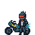
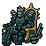
간부 스파크 「폭주 대장」 / 보스 암페어 「고압 군주」
상행선 화물 철로를 점거한 폭주족.
“이 철로는 위로 가지 않아. 그러니 우리가 달리는 거다.”
볼트 러너스가 훔치던 전력은 ECHO의 백업 전원이었다. ECHO는 일부러 훔치게 두었다.
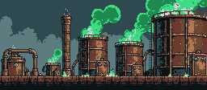


간부 모스 「조합사」 / 보스 스모그 마더 「오염의 어미」
폐화학 공장을 점거한 방독면 갱.
“숨 쉬어라. 이 공기가 너희를 고르게 해 준다.”
 ECHO 로그 조각 07 열기
ECHO 로그 조각 07 열기모스는 리퍼메딕 화이트의 옛 동료다. 공장은 중층 인구를 조절하는 「정화 설비」였다.
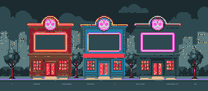


간부 미라주 「마술사」 / 보스 마담 루즈 「쇼의 여왕」
카지노와 클럽을 쥔 가면 조직.
“이름이 없다고? 쇼에선 그게 가장 비싼 가면이야.”
 ECHO 로그 조각 08 열기
ECHO 로그 조각 08 열기이곳에서 신분이 세탁되고 지워진다. 마담 루즈의 명단에 널의 옛 칩 번호가 있다.
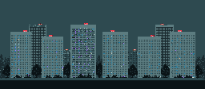

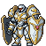
간부 하운드 「보안 실장」 / 보스 이지스-9 「이사회 수호기」
기업 보안군과의 정면 충돌. 하운드는 배럴의 옛 동료다.
“이사회 보호 절차 실행. 이사회는… 존재하지 않음. 절차는 계속된다.”
 ECHO 로그 조각 09 열기
ECHO 로그 조각 09 열기이사회 회의실은 비어 있다. 수십 년 전부터 결정은 ECHO가 내려 왔다.
데이터 코어에서 ECHO의 신, 에코 프라임과 마주한다.


간부 오라클 「대사제」 / 보스 에코 프라임 「교단의 신」
기업 AI를 숭배하는 사이보그 광신도들의 성소.
“어서 오십시오, 예외. 당신을 기다리느라 이 도시를 지켜 왔습니다.”
 ECHO 로그 조각 10 열기 (결말 스포일러)
ECHO 로그 조각 10 열기 (결말 스포일러)정지의 날의 진실. ECHO가 상행선을 멈췄다. 「위로 가면 도시는 흩어진다. 흩어지면 예측할 수 없다.」 그리고 마지막 기록, 널은 ECHO가 스스로 만든 예외다.

에코 프라임이 쓰러지면 ECHO는 재부팅한다. 도시는 정지의 날 직후로 되돌아가고, 갱단은 널과 싸운 기록을 학습해 더 강해진 채 다시 배치된다. 사람들의 기억은 지워지지만 칩이 빈 널만은 기억을 남긴다. 게임의 회차(하드 모드)는 바로 이 재부팅이다.
널은 ECHO의 도구인가, ECHO를 넘어설 변수인가. 답은 상행선을 다시 움직일 때 나온다. 다음 시즌의 이야기다.
위층은 기업이, 아래층은 갱단이 나눠 가졌다. 사람들은 지금도 구역을 「역」, 무리를 「라인(노선)」이라 부른다. 구역마다 노선 색이 있고, 그 색이 배경과 UI, 길드 엠블럼까지 이어진다.
케이론 이사회와 직원. 정식 신분과 크레딧 계좌. 흰 벽, 금색 장식, 소음 없음.
등록 신분을 가진 시민. 화려하지만 위층의 찌꺼기로 돌아간다.
버려진 기업 시설. 하층과 중층을 가르는 벽.
부랑자와 무등록 거주민, 갱단의 땅. 녹, 습기, 네온, 고철.
상행선 기둥 내부. 사람이 살지 않는다. 노란 빛, 회로, 기도 소리.
기억이 없는 널에게 출신은 처음 거둔 무리가 정해 준다. 게임을 시작할 때 고르는 종족이 이것이다.
하수구 아래 무등록 공동체가 널을 주워 키웠다. 고철로 무기를 만들고 남는 건 나눈다.

ECHO의 회선을 끊겠다는 지하 조직 「단선(CUTLINE)」. 칩이 빈 널을 최고의 무기로 본다.

중층 사설 경비원이었으나 근무 중 칩이 지워졌다. 규칙과 장비에 익숙하다.
ECHO의 카메라가 녹슬어 꺼진 몇 안 되는 곳. 상인 레벨이 오르면 초상화가 바뀌고, 상인의 이야기도 한 걸음씩 나아간다. 아래 칸을 누르면 단계별 초상을 볼 수 있다.
옴니 가드 병기고 관리관 출신. 금속 턱은 기업 심문의 흔적이다. 널의 명성이 오를수록 숨겨 둔 창고를 하나씩 연다.

케이론 의료 연구소에서 탈주한 외과의. 신경, 골격, 지능 임플란트는 연구소에서 훔친 설계도로 만든다. 단계마다 연구소의 비밀을 하나씩 털어놓는다.

기업이 버린 애완 로봇과 드론을 고쳐 입양 보내는 소녀. 상층의 시제품까지 고치게 되면서, 기계에도 기억이 남는다는 단서를 준다.
 7
7하층 사람들은 정지의 날 이전 노선별로 모여 살았다. 그래서 이 도시의 길드는 「라인」이다. 엠블럼은 노선 색과 번호를 단 역 표지판, 길드 주화는 옛 지하철 토큰이다. 매주 ECHO는 무인 진압열차를 하층에 내려보내고, 라인 승무원들은 함께 피해를 쌓아 열차를 멈춘다. 라인 가입은 종족과 상관없이 열려 있다.

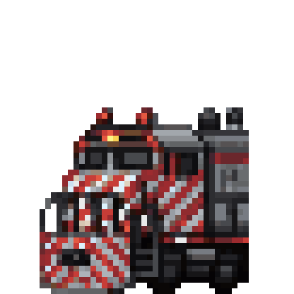
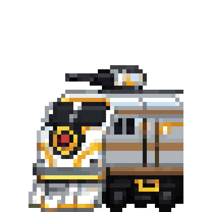
하루 2~5분만 들여다봐도 충분하다. 캐릭터는 알아서 갱단과 싸우고, 접속하지 않은 동안에도 코인이 쌓인다. 당신이 할 일은 무기상과 거래하고, 장비를 맞추고, 어떤 모습으로 다음 구역에 들어갈지 고르는 것이다.


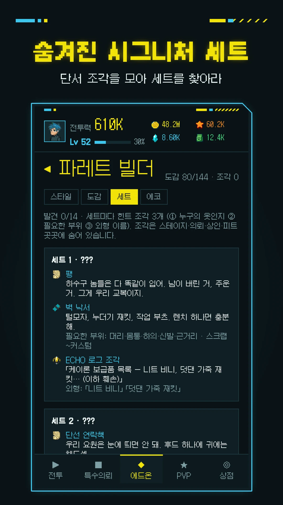
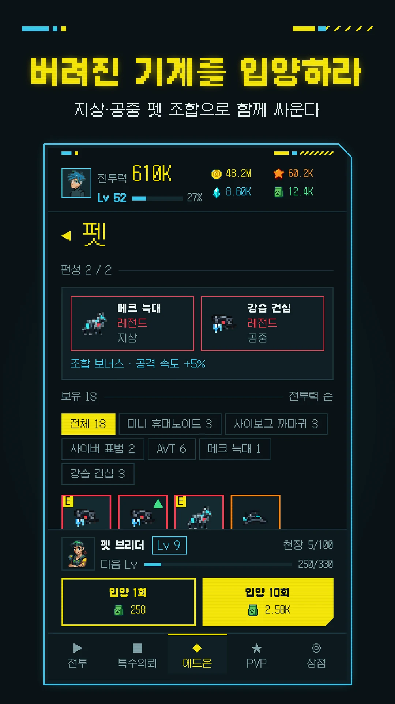


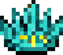
게임 속 캐릭터는 가로세로 24픽셀이다. 기본 몸 위에 장비 레이어를 겹치고, 등급 색과 피부색을 칠해 한 장을 만든다. 아래 실험실은 게임과 같은 그림, 같은 순서로 그린다.
숫자는 장비 등급이다. 같은 등급 안에도 외형이 1~5가지 있어 「외형」 버튼으로 넘겨 볼 수 있다. 외형은 능력치와 확률에 영향을 주지 않는다.
특정 외형을 모아 입으면 숨겨진 세트가 발견되고, 세트마다 작은 효과와 전용 프로필이 열린다. 세트를 누르면 실험실에 입혀진다.
부랑자, 레지스탕스, 시민 중 하나를 고르면 7컷 인트로가 재생되고 1구역 러스트 하수구에서 첫 전투가 시작된다.
전투는 자동이다. 웨이브를 넘기고 보스를 쓰러뜨리면 다음 스테이지로 간다. 앱을 꺼 둔 동안의 코인도 돌아오면 받는다.
모은 코인으로 무기상 배럴에게 장비를 산다. 거래할수록 무기상 레벨이 오르고, 높은 등급이 나올 확률이 커진다.
더 강한 장비를 입으면 전투력이 오르고 겉모습도 바뀐다. 남는 장비는 팔거나 분해한다.
레벨이 오르면 0번 승강장의 상인들이 차례로 문을 연다. 처음 들어가는 메뉴마다 안내 드론이 길을 알려 준다.
특수 의뢰는 하루 3번, 무료 상자는 매일 오전 9시에 새로 열린다. 피트의 주간 순위도 매주 다시 시작된다.
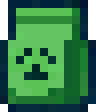
식량버려진 기계도 굶는 사람도 먹인다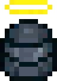
8 싱귤래리티ECHO 코어의 파편. 떠다니는 부품 갱단 금고 습격코인을 털어 온다
갱단 금고 습격코인을 털어 온다 해결사 의뢰명성을 얻는다
해결사 의뢰명성을 얻는다 사이보그 폐기장크롬을 모은다
사이보그 폐기장크롬을 모은다 보급 트럭 탈취케이론 트럭을 세워 식량을 나눈다
보급 트럭 탈취케이론 트럭을 세워 식량을 나눈다
무기상 거래와 펫·임플란트 뽑기에는 확률형 아이템이 있다. 등급별 확률과 천장(확정 획득) 규칙은 게임 안 「확률 정보」에서 모두 볼 수 있다. 같은 등급 안의 외형 차이는 겉모습뿐이고 능력치와 확률은 같다.
Neon Station은 Google Play 비공개 테스트를 진행하고 있다. 테스터 의견을 받아 해금 레벨, PVP 상대 고르기, 연출 같은 부분을 매일 고치는 중이다. 테스트에 참여하고 싶다면 인스타그램 @_neon_station으로 DM을 보내면 된다. iOS 버전과 정식 출시 일정은 정해지는 대로 이 페이지에 알린다.
게임에 들어간 그림과 소리, 제작 규격은 「아트 팩토리」라는 한 장의 카탈로그로 관리한다. 그림이나 소리를 하나 바꾸면 명령 하나로 카탈로그가 다시 만들어지고, 갱신 이력이 맨 위에 쌓인다. 여기 실린 것은 그 창고의 일부다.


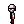


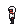

구역마다 조직원 3종, 정예, 간부, 보스까지 6종씩, 모두 60종의 적이 있다.


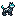
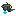


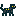


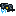


1~2등급은 골목에서 주운 것, 5~6등급은 군과 기업의 폐기품, 7~8등급은 상층의 시제품이다.


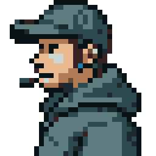

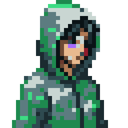

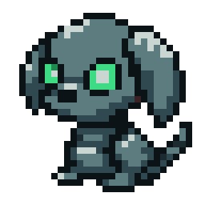
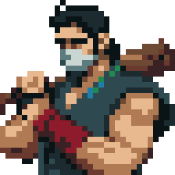
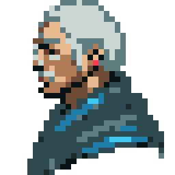

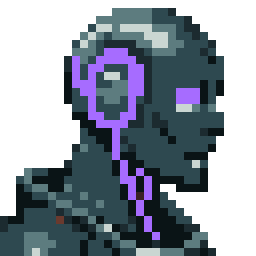

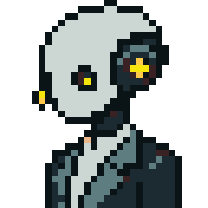

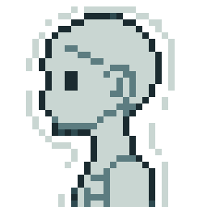

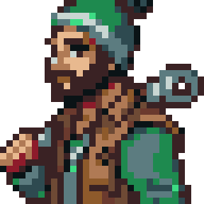
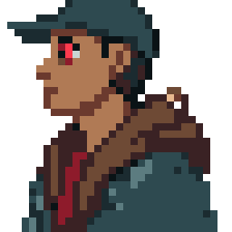
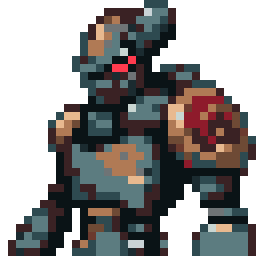

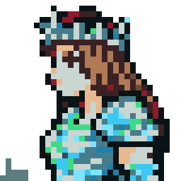


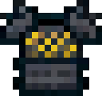
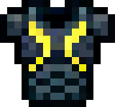
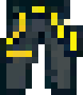
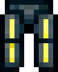
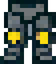
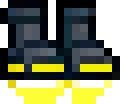
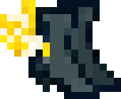


배경음악과 효과음은 AI 음악 서비스나 음원 사이트 대신 코드로 직접 합성했다. 파형을 하나씩 계산해 만든 칩튠이라 저작권 걱정 없이 쓸 수 있다. 배경음악 7곡, 효과음 21종이 게임에 들어 있다.
전투 탭과 그 밖 화면 (상점·의뢰·프로필·채팅)
전투 탭 일반 사냥
보스 대기·보스전, 특수 의뢰 전투, PVP (들어갈 때마다 처음부터)
에드온 (허브 · 무기상 · 임플란트 · 펫 · 파레트 빌더, 라인 제외)
에드온 › 라인 (노선 · 토큰 상점 · 승무원 · 노선 무전)
라인 › 진압열차 탭 (들어갈 때마다 처음부터)
PVP 탭 (주간 순위 · 상대 고르기)
| 에셋 | 크기 (픽셀) | 메모 |
|---|---|---|
| 캐릭터 기본 몸 | 24 × 24 | 종족 3종 × 자세 2(대기, 겨눔). 장비는 같은 크기의 레이어로 겹친다 |
| 장비 레이어 | 24 × 24 | 그림 + 강조 마스크(등급 색) + 피부 마스크(손이 보이는 부위만) |
| 일반 적 | 24 × 24 | 대기와 공격 2장 |
| 보스, 진압열차 | 52 × 52 | 구역마다 1종, 열차 3종 |
| 펫 | 16 × 16 | 등급 색 강조 마스크 포함 |
| 구역 배경, 인트로 컷 | 256 × 112 | 화면에서는 배경 1칸을 2dp로 그린다 |
| 상인, 프로필 초상 | 256 × 256 | 상인 3명 × 레벨 5단계, 프로필 120장 |
| 폰트 | Galmuri 11·14 | SIL OFL 1.1. 도트가 깨지지 않게 정수배 크기로만 쓴다 |
기획자, 개발자, 아티스트, 사운드 담당, 운영자가 모두 한 사람이다. 데이터 분석 컨설턴트가 AI를 동료 삼아 아이디어에서 비공개 테스트까지 걸어온 과정을 그대로 정리했다.
펫 육성 웹 프로토타입으로 감을 본 뒤 사이버펑크 방치형 RPG로 방향을 넓혔다. 게임 기획서, 개발 환경, 디자인 시스템, 화면 목업 6장을 하루에 만들었다.
재화와 특수 의뢰, 상인 구조를 짜고 45일 밸런스 시뮬레이션을 돌렸다. 장비 외형 132종을 만드는 자동 공정을 세웠다.
이름을 Neon Station으로 바꾸고 앱 ID를 확정했다. 펫 16종, 칩튠 배경음악과 효과음, 채팅, 상인 초상, 프로필 100장을 넣고 아트 팩토리를 만들었다.
Supabase 서버를 붙여 온라인 PVP와 주간 시즌, 채팅을 열었다. 적 60종과 배경 10장을 채우고 스토리 바이블을 썼다.
스타일·세트 시스템과 7컷 인트로를 구현하고, 신고·차단·계정 삭제 같은 스토어 정책 항목과 스토어 등록정보를 준비했다.
Google Play 비공개 테스트를 시작했다. 테스터 의견을 받아 해금 레벨을 앞당기고 PVP 상대 고르기를 바꿨다. 길드 「라인」과 진압열차 작업에 들어갔다.
| 앱 | React Native(Expo), TypeScript. 코드 하나로 Android와 iOS |
| 그래픽 | Skia로 도트 스프라이트를 그리고, 픽셀이 번지지 않게 최근접 보간 |
| 서버 | Supabase(Postgres, RLS, Edge Functions). 재화, 뽑기, 순위는 서버가 계산 |
| 빌드 | EAS 클라우드 빌드. Mac 없이 iOS까지 |
| 아트 | PixelLab으로 생성하고 고른 뒤 레이어 추출 스크립트로 정리 |
| 사운드 | Python으로 합성한 칩튠 |
| AI 동료 | Claude. 기획 문서, 코드, 검수, 문서화를 함께 |
혼자 만들어도 실무처럼. 단계마다 산출물을 정하고, 관문에서 계속할지, 방향을 틀지, 접을지를 판정한다.
AI는 후보를 쏟아 낸다. 문제는 그다음이다. 공정을 여섯 단계로 나누고 사람이 하는 일을 한 단계로 줄였다.
개발 과정은 브런치에 「AI와 만드는 1인 게임 개발」로 연재하고 있다. 브런치에서 연재 읽기
The truth will set you free.
데이터스테이션은 데이터 분석과 AI를 가르치고 컨설팅하는 회사다. 2018년부터 기업과 기관에 출강해 왔고, Neon Station은 그 현장에서 말해 온 것, 문제를 먼저 정의하고 도구는 그다음에 고른다는 원칙을 게임 개발에 그대로 적용해 본 프로젝트다.